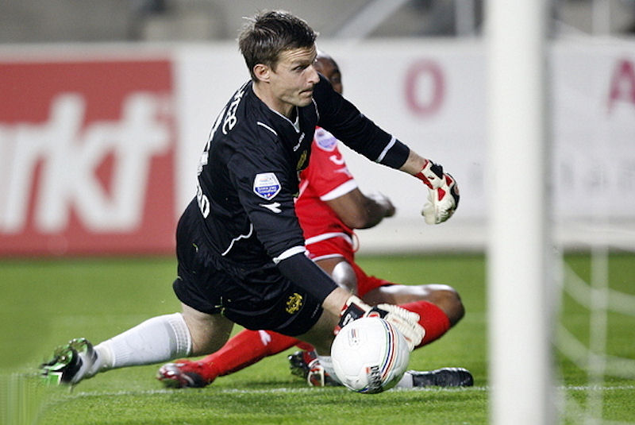

FC Twente zette Roda JC in een levendige wedstrijd opzij (4-2) en stelde
daarmee het kampioenschap van AZ minimaal een week uit.
Hoewel Kenneth Perez zelf niet tot scoren kwam, vervulde de Deense spelmaker
een beslissende rol bij FC Twente. De voorbereiding op de eerste drie
Enschedese doelpunten kwam op zijn naam te staan.
In de zeventiende minuut legde Perez een voorzet van Eljero Elia neer voor
Romano Denneboom, die de bal vervolgens onder Roda-keeper Bram Castro door
binnen schoot 1-0. Bij de 2-0 van Douglas was de voorzet opnieuw van de
Deen, die ook de assist op de 3-0 van Slobodan Rajkovic op slag van rust
voor zijn rekening nam.

Dennenboom schiet onder Castro door 1-0 binnen, (17').
Bij beide doeltreffende kopballen van de FC Twente-verdedigers viel ook het
halfslachtige verzet van de Roda-defensie op. De vierde treffer van de
Tukkers, een kwartier voor het einde, was evenmin een voorbeeld van
doortastend verdedigen. Elia kon door onoplettendheid van Davy De Fauw bij
de tweede paal een voorzet van Marko Arnautovic simpel tot doelpunt
promoveren.
In aanvallend opzicht onderscheidde Roda JC zich met twee fraaie treffers.
In de 25ste minuut kopte Laurent Delorge een afgemeten voorzet van Kris De
Wree achter FC Twente-keeper Nikolai Michailov (1-1). Met een schitterende
uithaal bekroonde Sekou Cissé een sterk optreden, maar zijn doelpunt kon
niet verhinderen dat Roda JC dieper in de degradatieproblemen is gekomen.
Denneboom17' 1-0
Delorge 25' 1-1
Douglas 35' 2-1
Rajkovic 43' 3-1
Elia74' 4-1
Cissé 78' 4-2
Kaarten
Meeuwis 62'